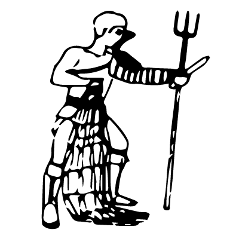

The retiarius ("net fighter") carried a trident, a dagger, and a net. He fought without the protection of a helmet. Retiarii usually fought Secutores but sometimes fought other styles of fighters as well. There was an effeminate class of gladiator who fought as a retiarius tunicatus. They wore special tunics and were looked on as a social class even lower than infamia.
Select
Back